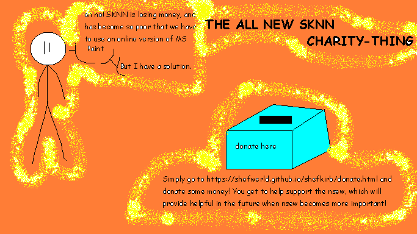
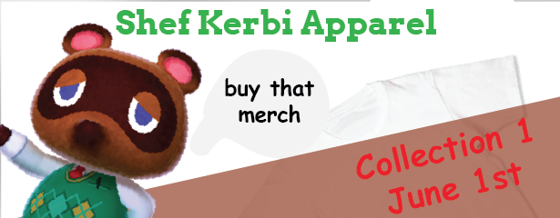

Episode 23: June 3rd, 2019
Back to index

"Time to learn the four cardinal directions with Shef Kerbi!
North, East, West, South
Or NEWS for short!"
ANNOUNMENT:
by Reali

--
SHEF KERBI'S APPAREL
by shef kerbi, reali, bon starbuckle and john gameman

Shef Kerbi's Apparel: Collection 1 has now released! Featuring five unique shirts, Shef Kerbi's hat and a special from Böñńé Stärbûčćlé, be sure to cop some of our new merch! Shef Kerbi News Network employees get a 25% discount at checkout.
This issue of the newspaper has been fully sponsored by Shef Kerbi's Apparel, meaning that we're actually releasing an issue less than a month after the previous one!
--
news i guess
by Zeke Teddy
Keyn DDDD has been re-elected as the ruler of Dreem Lend, because apparently that's an elected position. Two major contributors to his success seem to be the fact that he has "Keyn" in his name which is pretty close to "King", and the fact that he was the only candidate running.

braken nswe:
by reali
The recent language trend (you know, the w***y one) has recently been banned in Dreem Lend. This disappoints everyone who was part of the trend, but people who thought it was annoying are currently partying.
braken nswe updaet:
We have learned that the participators of the w***y trend have been replacing letters with numbers to get around the ban. Keyn DDDD has yet to comment on the matter.

Breaking Olds!
by Zeke Teddy
News reporter and/or weatherman Zeke Teddy has accidentally travelled a few hours into the future. He's sent back a copy of himself so he can still make news reports, but he's a little confused as to how he managed to accidentally travel through time.
Now I don't wanna give my own opionion but...
OPIONION WITH SHEF KERBI AND BON STARBUCKLE
WHAT? YOU'VE NEVER PLAYED TUBER SIMULATOR BEFORE?
So we told you Shef Kerbi News Network fans on our Scratch page that you could post anything with the #SKNN hashtag and you could end up in our paper! In this episode, we'll respond to some of your feedback with the new SKNN format, as well as show some of your cool stuff!
We began this issue's section with
"Good Night"
and here were your responses:
scratchsupportlon wrote:
"Hi guys, scratchsupportlongusernamesplease here. One of my friends is a biological scientist and he figured out a way to make the word w***y contagious. He doesn't have a vaccine for it yet."
Just hope that Keyn DDDD doesn't call the Dreem Lend FBI on you. Also we'll help you get verified because you said so
However, something unprecedented happened:
AN ACTUAL LIVING HUMAN WANTS SOME OPIONIONS FOR DINNER
I know; absolutely incredible
TailsFanV51 wrote:
"#SKNN help i lost my kerbi ps4 game box find it pls"
Okay, we've contacted the Dreem Lend FBI to find your Kerbi PS4 Game Box.
...and it will divert resources away from arresting scratchsupportlongusernamesplease so we can get Scratch to verify them
OPIONION NEWS
TSM_Liquid_FaZe_Ninja has been located in the Bahamas, and we have photographic proof:
We hope he comes back for Issue #24 and also buys our merch available at https://shefwerld.github.io/clothingstore/index.html
If you would like to submit your own opionion, just go to our social media, on Twitter, Instagram or Scratch.
But prefably Scratch because that's what everyone uses
Ask Bon and Bon's Cat
Dear Bon,
w***y
w***y wilbert
uh, this isn't really a question w***y wilbert.
----------------
hello i am john gameman profesoinal game and man man i hear about you cloething store have "collection 1" so i becom shirt man to contribut shirt to "collection 1", shef kerbi news thing sonds cool to i shold work ther ecept i alredy do????? what?????????

COMIX
quick north south east west
by Shef Kerbi
Apple has gone missing, so there's no Candy Sadness anymore, which has made everyone sad. There was also no comics on the news queue, and an SKNN news issue would not be an SKNN news issue without a comic so here's a random comic from Issue 14:

WETHR
by Zeke Teddy
Ok so it's getting a little colder here, top of 19° and bottom of 8°, expect some light rain (very, very light rain)
Tommorow it's a top of 18° and a min 10°, along with a few water molecules condensing and falling but so unnoticeably that you really can't consider it rain, more of... a bracing dampness in the air
THANK YOU FOR WATCH. PLEASE TUN E IN NEXT TIME FOR MORE NESW

Shef Kerbi News Network follows the guidelines and conventions set by the 1984 High Quality News Act of Dreem Lend, which states
that any news published is to be of a high quality, is to remain unbiased and to show all sides of a news report, does not attack anyone, and protects the privacy
of people whose identities don't want to be revealed.
If you would like to file a complaint regarding content use, please message SKNN through our Scratch account. We also have a Twitter and Instagram account if you
prefer.
Shef Kerbi News Network respects the ancestors of Cappy Town, and understands that they are the reason why Dreem Lend exists.
Shef Kerbi News Network is proud to be a subsidiary of Shef Werld
this website is best viewed with Ned's Escape